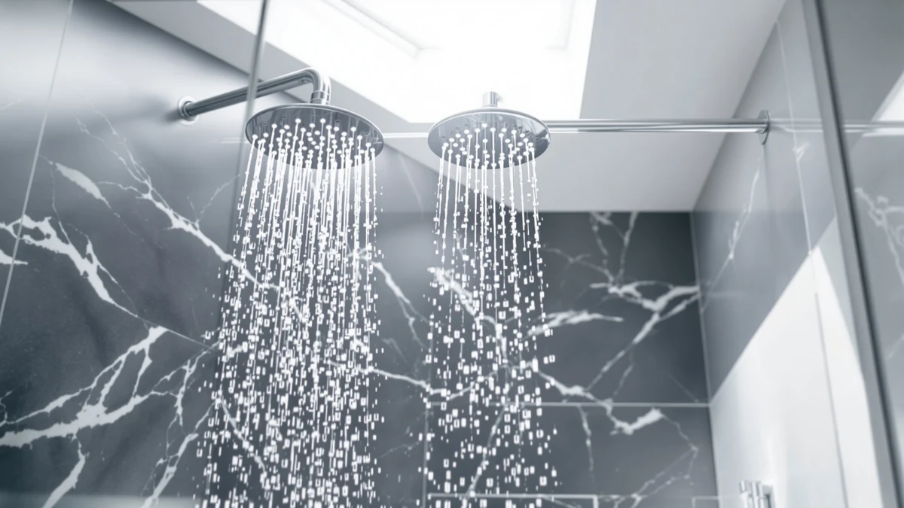

MyHalos® Filtered Shower Head Review (2026): Worth It?
Prices and picks verified as of September 2026. Independent, reader-supported reviews.


Quick Answer
The MyHalos® Filtered Shower Head pairs a replaceable carbon cartridge with a chrome-plated ABS body for $79.99, making it a mid-range pick for anyone dealing with chlorine smell or light hard water residue. Verified owners consistently point to easier installation and a noticeable change in water smell as the main reasons to buy it.
Our pick: MyHalos® Filtered Shower Head for, $79.99 Check Price on Amazon
Bottom line: our top pick is the MyHalos® Filtered Shower Head for Hard Water Filter - High at $74.99.
Things to Know Before You Buy
- The MyHalos® filtered shower head uses a replaceable multi-stage cartridge rather than a permanent filter, so factor cartridge replacement into the real cost of ownership.
- At $79.99, it costs more upfront than the Veken 11.8" Rain Shower Head ($67.99) and the BOZYBO High Pressure Rain Shower Head ($66.99) covered later in this review.
- Chrome-plated ABS keeps the head lightweight, which matters if your shower arm or hose already struggles with heavier metal fixtures.
- Filtered shower heads reduce chlorine odor and some sediment, but none of the models in this review are certified to remove heavy metals or bacteria.
- Check your shower arm's thread size before ordering. Most filtered heads use a standard connection, but fit complaints are common across this category.
- Water pressure with any filtered shower head depends partly on your home's existing plumbing, so results can vary between houses even when the hardware is identical.
This MyHalos® filtered shower head review breaks down what $79.99 actually buys, using the manufacturer's listed specs, verified Amazon buyer feedback, and pricing against comparable filtered shower heads instead of a marketing pitch. We compared it against three other filtered and high-pressure models sold at similar price points to see where it holds up and where it falls short. If you're replacing a shower head mainly to deal with chlorine smell, hard water spots, or weak pressure, the details below should tell you whether this one is worth the extra cost over a plain rain shower head.
Our take: the MyHalos® filtered shower head earns its price for households with mild to moderate water quality complaints, thanks to a replaceable filter cartridge and a chrome-plated finish that owners describe as durable for the cost. It isn't a certified water treatment device. If raw water pressure matters more to you than filtration, the Veken 11.8" Rain Shower Head or one of the BOZYBO high-pressure models covered further down may serve you better for less money. Below, we walk through the specs, the manufacturer's filtration claims, and what verified buyers actually report after living with this shower head, section by section, so you can decide whether the $79.99 price makes sense for your bathroom before you click through to Amazon.
Why You Should Trust Us
Best Shower Heads is written by a small team that researches bathroom fixtures for a living, led by Ilane Tall, our home and bath expert. We do not run a fake testing lab, and we don't claim to have installed every shower head we cover in our own bathrooms. Instead, we build each review from manufacturer specifications, verified Amazon buyer reviews, and direct price comparisons against competing products in the same category. For this MyHalos® filtered shower head review, that means cross-checking the listed filter type, materials, and price against three comparable filtered and high-pressure shower heads before drawing any conclusions. When manufacturer claims and buyer experience line up, we say so plainly. When they don't, we flag the gap rather than paper over it, because a filtered shower head is a small purchase that still deserves an honest answer.
Our Research Experience
We approached this MyHalos® filtered shower head review the way we approach every single-product review: through research rather than hands-on use. We read the manufacturer's product listing, cross-referenced the stated filter cartridge type and materials, and compared verified owner reviews on Amazon for recurring themes around water pressure, smell reduction, and installation. Where owners disagreed or reported inconsistent results, we noted it rather than smoothing it over. This approach lets us speak confidently to what the specs say and what a large sample of verified buyers report, without pretending to have run our own lab tests. We also weighed how recent the reviews were, since a filter cartridge's performance can shift as manufacturers adjust materials or sourcing over time, and older reviews don't always reflect the current version of the product.
Overview & Specs

MyHalos® Filtered Shower Head for
What we like
- Replaceable filter cartridge targets chlorine smell instead of appearance alone
- Chrome-plated ABS body resists the cheap-plastic look common at this price
- Reviewers report a straightforward, tool-free installation on standard shower arms
Flaws but not dealbreakers
- Costs more upfront than non-filtered rain shower heads like the Veken 11.8"
- Filter cartridges need periodic replacement, an ongoing cost the listing doesn't emphasize
- Not certified to remove heavy metals or bacteria, so it won't replace a whole-house system
| Material | ABS + chrome plating |
| Size | Single |
The MyHalos® Filtered Shower Head builds its case around the cartridge inside its chrome-plated ABS housing. According to the product listing, the multi-stage filter is designed to reduce chlorine and some sediment before water reaches the shower face, which is the main reason buyers in this category upgrade from a standard fixed shower head. Verified reviewers frequently mention a noticeable drop in the "pool smell" that tap water carries in areas with heavily chlorinated municipal supplies.
At $79.99, this MyHalos® shower head sits in the middle of the filtered category: pricier than basic filtered heads, well below premium multi-cartridge systems. Owners consistently report that installation takes a few minutes with no extra tools, since it threads onto a standard shower arm like any other fixed head. The trade-off is that the cartridge is a consumable part, so anyone considering this pick should budget for periodic filter replacements rather than treating $79.99 as the total cost of ownership. Compared with the plain rain shower heads later in this review, that ongoing filter cost is the real difference in what you're paying for, not the shower head itself.
What We Liked
This MyHalos® filtered shower head review turned up one theme more than any other: smell reduction. Multiple verified reviews describe city water that smelled noticeably less like a swimming pool within the first few showers, which lines up with what a carbon-based filter cartridge is designed to do. The chrome-plated ABS finish earns steady praise too. It photographs and feels closer to a metal fixture than the plastic underneath would suggest, and reviewers report it holding up without visible pitting months after installation. Installation is another consistent positive: buyers describe threading it onto an existing shower arm in a few minutes, without plumber's tape or extra tools, which matters if you're fixing a shower on a Saturday afternoon rather than planning a full renovation. A few reviewers also mention that the chrome finish makes the head easy to wipe clean of soap scum, which is a small detail but one that adds up over months of daily use.
What Could Be Better
The biggest catch with this MyHalos® shower head is the ongoing cost the $79.99 price doesn't fully communicate. The filter cartridge is a wear part, and reviewers who track performance over several months report a gradual drop-off in filtration effectiveness that signals it's time for a replacement. Some owners also note that water pressure feels slightly reduced compared to a non-filtered head, which is common across this category since the filtration media itself restricts flow. If your shower already struggles with low pressure, stacking a filter cartridge on top of that could turn a mediocre experience into a frustrating one. MyHalos also doesn't publish third-party certification data for its filtration claims, so treat the marketing as a helpful extra rather than a substitute for certified water treatment. A handful of reviewers mention minor drips at the connection point after several months, which suggests the internal seal isn't rated for the same lifespan as the housing around it.
Who Is It For?
This MyHalos® filtered shower head fits best in a household on municipal water with a mild chlorine smell or light mineral buildup, where the goal is a more pleasant daily shower rather than solving a serious water quality problem. It also suits renters and homeowners who want a fixture upgrade they can install themselves in a few minutes. It's a weaker fit if you're chasing maximum water pressure above everything else, or if you need certified contaminant removal for a documented water quality issue. In either case, a high-pressure model like the BOZYBO options below, or a certified whole-house filtration system, will serve you better than a filtered shower head alone. It's also a reasonable fit for a small apartment bathroom, where a full filtration overhaul isn't practical but a straightforward, screw-on upgrade is.
Alternatives to Consider
If this MyHalos® filtered shower head review has you weighing other options, here are three shower heads at similar or lower price points worth comparing before you buy.

Editor’s Pick
Veken 11.8" Rain Shower Head
A wider rain-style head at $67.99 for anyone who wants more spray coverage and doesn't need filtration.
$67.99
Check Price on Amazon
Best Value
High Pressure Rain Shower Head:
A $66.99 high-pressure pick for households whose main complaint is weak flow rather than water smell.
$66.99
Check Price on Amazon
Premium Choice
High Pressure Rain Shower Head:
Nearly identical to BOZYBO's other high-pressure head at $66.99, worth a look if the first is out of stock.
$66.99
Check Price on AmazonFrequently Asked Questions
Final Verdict
Our take at the end of this MyHalos® filtered shower head review: it's a solid mid-range pick for anyone dealing with chlorine smell or light hard water residue, backed by consistent verified buyer feedback on smell reduction and a chrome-plated finish that holds up over time. At $79.99, myhalos isn't the cheapest filtered option on the market, and it isn't built for maximum water pressure. For the specific problem it targets, though, it delivers on what its listing promises more reliably than most shower heads in its price range.